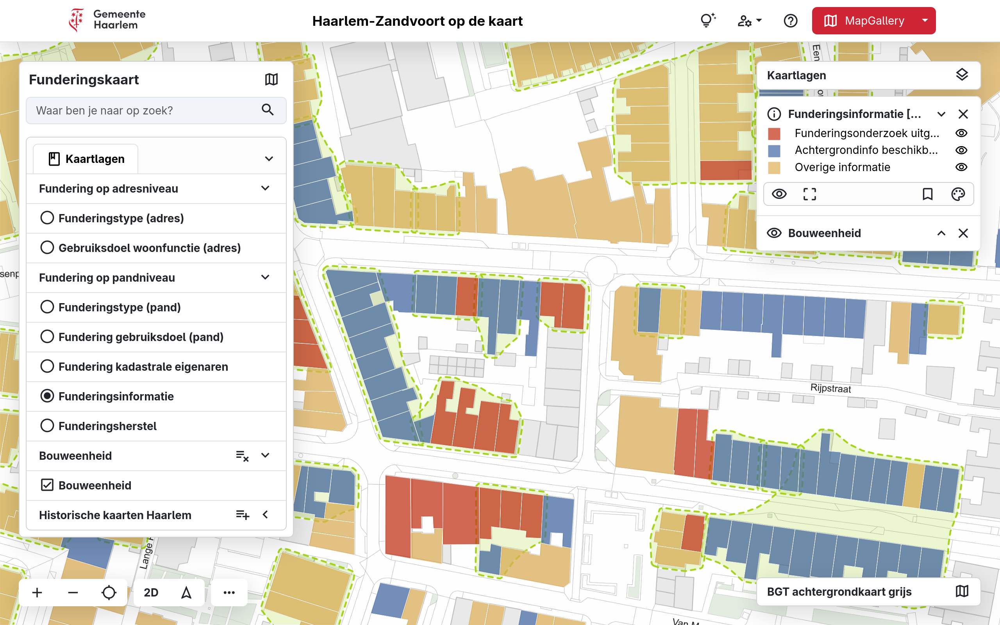

Gemeente Haarlem
Open data toegankelijk gemaakt met MapGallery
De uitdaging
Gemeente Haarlem beschikt over een grote hoeveelheid geografische gegevens: van wijk- en buurtindelingen tot parkeerzones, openbare ruimte-objecten en milieudata. De gemeente wilde deze informatie op een toegankelijke, visuele manier beschikbaar stellen voor inwoners, bedrijven en interne teams.
Belangrijk daarbij waren:
Transparantie richting burgers
- Betere vindbaarheid en herbruikbaarheid van open data
- Een kaartoplossing die eenvoudig te beheren is en voldoet aan overheidsrichtlijnen zoals de WCAG en de BIO
De oplossing: open standaarden en MapGallery als portaal
Haarlem kiest voor MapGallery als centrale kaartviewer binnen het open-dataplatform.
Met MapGallery kan de gemeente geografische datasets als overzichtelijke kaartlagen publiceren in één intuïtieve interface. De achterliggende gegevens worden ontsloten via open webservices, waar MapGallery rechtstreeks gebruik van maakt.
Gebruikers kunnen kaartlagen zoeken, detailinformatie bekijken of direct doorklikken naar de brondata. Hierdoor hebben inwoners in één oogopslag inzicht in onder andere:
Parkeerzones en parkeervoorzieningen
- Wijk- en buurtstructuur
- Openbare-ruimte objecten
- Gebiedsindelingen en beleidskaarten
Alle data is gebaseerd op OGC-open standaarden, waardoor afnemers deze eenvoudig kunnen koppelen binnen hun eigen GIS-applicaties.

Het resultaat
✔ Meer transparantie
Burgers kunnen zelfstandige antwoorden vinden op locatievragen en beter begrijpen wat er in hun omgeving speelt.
✔ Hogere betrokkenheid bij open data
De visuele presentatie stimuleert gebruik van open datasets door inwoners, onderzoekers en lokale initiatieven.
✔ Eenvoudig beheer voor de gemeente
Nieuwe kaartlagen zijn binnen enkele minuten online te zetten, compleet met metadata, interactieve legenda en zoekwoorden.
✔ Eén centrale plek voor geodata
Ook interne teams gebruiken dezelfde viewer om informatie te delen, plannen te bespreken en besluiten te onderbouwen.
Waarom Haarlem voor MapGallery kiest
Gebruikersvriendelijk voor inwoner, ondernemers en partners
- Minimaliseert beheerlast voor de organisatie
- Geschikt voor grote hoeveelheden datasets
- Maximale aandacht voor de digitale toegankelijkheid volgens de Web Content Accessibility Guideline (WCAG)
- Sluit aan op open standaarden en bestaande GIS-processen
Vooruitblik
Gemeente Haarlem onderzoekt verdere uitbreidingen, zoals vector tiles, real-time datalagen en koppelingen met 3D datasets. Op die manier groeit MapGallery mee als fundament onder de open-datastrategie van de stad.